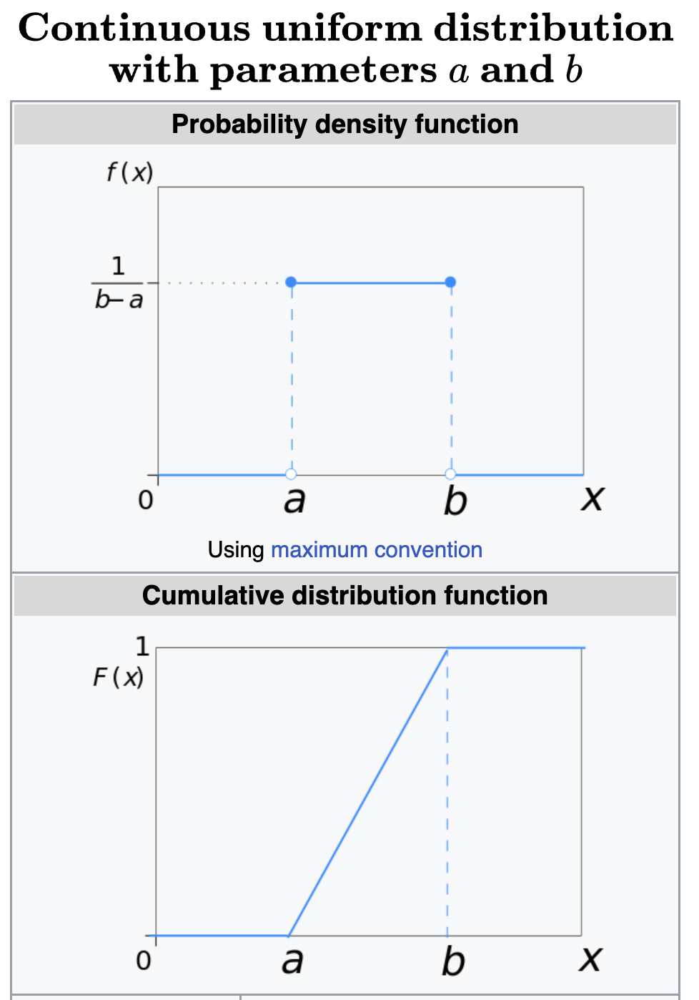

약속
기호에 대한 암묵적 약속
- 르벡메져: 르벡메져는 지금까지 \(m\)으로 표현 \(\Rightarrow\) 앞으로는 \(\lambda\)로 표현.
- 메져: \(\mu,\nu\) 등으로 표현.
- 분포, 분포함수, 밀도함수: 확률공간 \((\Omega, {\cal F}, P)\)에서 정의된 확률변수 \(X\)에 대응하는 분포는 \(\mu_X\), 그에 대응하는 분포함수는 \(F_X\), 그에 대응하는 밀도함수는 \(f_X\)라고 표현.
- 일반적인 교재의 표기법
- 르벡메져: \(\mu\), \(\lambda\), \(m\)
- 메져: \(\mu\), \(\nu\), \(m\)
- 분포: \(\mu\)
- 분포함수: \(F\), \(F_X\)
- 밀도함수: \(f\), \(f_X\)
- 잴 수 있는 함수의 표현 (아래는 모두 같은말)
- 두 개의 가측공간 \((\Omega, {\cal F})\), \((S, {\cal S})\)을 고려하자. 함수 \(f:\Omega \to S\)는 \(\forall B \in {\cal S}:~\{\omega: f(\omega) \in B\} \in {\cal F}\) 을 만족한다.
- 두 개의 가측공간 \((\Omega, {\cal F})\), \((S, {\cal S})\)을 고려하자. \(f:\Omega \to S\)는 잴 수 있는 함수이다.
- \(f:(\Omega,{\cal F}) \to (S, {\cal S})\)
- \(f\)는 \({\cal F}-{\cal S}\) measurable 하다.
- \(f \in {\cal F}\), 이 표기법은 \((S,{\cal S})=(\mathbb{R}, {\cal R})\)일 경우에 한정하여 사용할 수 있음.
- \(f\)는 \(S\)-valued measurable map
확장된 실수공간
- 교재에 따라서 확장된 실수공간 \(\bar{\mathbb{R}}\)를 고려하기도 한다. (Durrett 2019, p 14)
\[\bar{\mathbb{R}} = \mathbb{R} \cup \{-\infty\} \cup \{\infty\}\]
- 또한 확장된 실수공간에 대응하는 보렐셋을 정의하기도 한다.
\[{\cal B}(\bar{\mathbb{R}})=\bar{\cal R}\]
- \(\infty\), \(-\infty\)는 실수가 아니다. 따라서 \(x\in \mathbb{R}\) 인 경우는 \(x\)를 real-valued 라고 표현하지만 \(x \in \bar{\mathbb{R}}\) 인 경우는 \(x\)를 \(\bar{\mathbb{R}}\)-valued 라고 표현한다.
로드맵
- 목표: 밀도함수에 대한 소개
- 로드맵: (적분, 칸토어집합) \(\to\) 밀도함수
예비학습
\((\mathbb{R}^d, {\cal R}^d)\)
- 정의: 두개의 집합 \(A\), \(B\)가 있을때 두집합의 곱집합 (cartesian product) \(A\times B\)를 아래와 같이 정의한다.
\[A\times B=\{(a,b): a \in A, b \in B\}\]
- 정의: 수직선상의 두 열린구간 \((a_1,b_1)\), \((a_2,b_2)\) 의 곱집합
\[({\boldsymbol a},{\boldsymbol b}) = \bigtimes_{i=1}^{2}(a_i,b_i)= (a_1,b_1) \times (a_2,b_2)\]
을 open rantangle 이라고 한다. 비슷한 논리전개로 \(({\boldsymbol a},{\boldsymbol b}],[{\boldsymbol a},{\boldsymbol b}),[{\boldsymbol a},{\boldsymbol b}]\) 역시 정의할 수 있다.
- 이론: 아래와 같은 집합들의 모임 \({\cal A}\)를 생각하자.
\[{\cal A}=\{({\boldsymbol a}, {\boldsymbol b}]: {\boldsymbol a} < {\boldsymbol b},~ {\boldsymbol a}, {\boldsymbol b} \in \mathbb{R}^2\}\]
여기에서 \({\boldsymbol a}< {\boldsymbol b}\)는 “\(a_1<b_1\) and \(a_2 < b_2\)” 를 의미한다.
- 시그마필드 \(\sigma({\cal A})\)는 잘 정의된다. (귀찮아서 만든 이론1)
- \(\sigma({\cal A})\)은 \({\cal R}\)의 2차원버전이라 해석할 수 있다.
- 이러한 의미에서 \({\cal R}^2=\sigma({\cal A})\)라는 기호를 쓰기도 한다.
- \((\mathbb{R}^2, {\cal R}^2)\) 는 잴 수 있는 공간이다.
- 함수 \(\tilde{\lambda}: {\cal A} \to [0,\infty]\)를 아래와 같이 정의하자. 카라테오도리의 확장정리에 의하여 \(\tilde{\lambda}\)는 \((\mathbb{R}^2,{\cal R}^2)\) 에서의 메져가 된다. \[\tilde{\lambda}(({\boldsymbol a},{\boldsymbol b}])=\prod_{i=1}^{2}(b_i-a_i)\]
- 08주차에 정리된 모든 \({\cal A}_i\)에 대하여, \(\sigma({\cal A}_i)={\cal R}^2\) 을 만족한다.
- 체크: \((\mathbb{R}^2, {\cal R}^2)\) 와 동일한 논리전개가 \((\mathbb{R}^d, {\cal R}^d)\) 에서도 성립한다.
sup, inf
- 집합 \(A=\{1,2,3\}\)에 대하여 아래의 표현을 살펴보자.
- \(\max A =3\)
- \(\min A =1\)
- 집합 \(A=[0,2]\)에 대하여 아래의 표현을 살펴보자.
- \(\max A =2\)
- \(\min A =0\)
- 집합 \(A=(0,2)\)라면?
- 가짜정의: 어떠한 집합 \(A\)가 있다고 할떄 \(\sup A\)와 \(\inf A\)는 각각 \(\max A\)와 \(\min A\)의 개념을 좀 더 업그레이드 한것이다. \(\max A\)는 \(A\)의 원소중 최대값을 의미하는데 이러한 \(\max\)의 정의는 구간 \([0,2)\)의 최대값은 \(2\)라고 주장할 수 없어 쓰기에 불편할 때가 있다. \(\min\) 역시 마찬가지의 불편함이 있다. 이를 보완하기 위해 등장한 개념이 \(\sup\)과 \(\inf\)이다.
- 트릭: 증가하는 수열 \(a_n\)의 경우 \(\sup\{a_n\}\)은 수열 \(\{a_n\}\)의 극한을 의미하기도 한다. 반대로 감소하는 수열 \(\{a_n\}\)의 경우 \(\inf \{a_n\}\)이 \(\{a_n\}\)의 극한을 의미하기도 한다.
- 집합들의 집합에서 \(\inf,\sup\)의 의미: 부등호 \(<\)를 \(\subset\)으로 해석
- 예시1: \(\inf\big\{(-\frac{1}{n},0]: n \in \mathbb{N}\big\}=\{0\}\)
- 예시2: \(\sup\big\{[0,1-\frac{1}{n}]: n \in \mathbb{N}\big\}=[0,1]\)
- 함수들의 집합에서 \(\inf,\sup\)의 의미: 부등호 \(f<g\) 를 “\(\forall x: f(x)<g(x)\)” 로 해석
- 예시1: \(f(x)=x\) 일때, \(\sup\big\{f_n: f_n(x)=x-\frac{1}{n}, n \in \mathbb{n} \big\}=f\)
잴 수 있는 함수들
- 이론: 두 개의 잴 수 있는 공간 \((\Omega, {\cal F})\), \((\mathbb{R}, {\cal R})\)을 고려하자. \({\cal F}\)-measurable 한 집합 \(A\)에 대하여3 함수 \(f:\Omega \to \mathbb{R}\)을 아래와 같이 정의한다고 하자.
\[f(\omega) = \begin{cases} 1 & \omega \in A \\ 0 & \omega \not \in A \end{cases}\]
함수 \(f\)는 \({\cal F}-{\cal R}\) measurable function 이다.
(해설)
- \(B \in {\cal R}\)를 고정하자.
- 만약에 \(\{1\} \notin B\) 이라면 \(\{\omega: f(\omega) \in B\}=\emptyset \in {\cal F}\) 이다.
- 만약에 \(\{1\} \in B\) 이라면 \(B=\{1\} \cup (B-\{1\})\) 와 같이 분해한다.
- \(f\)는 함수이므로 \(f^{-1}(B)=f^{-1}(\{1\}) \cup f^{-1}(B-\{1\})\)를 만족한다.
- \(f^{-1}(\{1\})=A\)이고 \(f^{-1}(B-\{1\})=\emptyset\) 이므로 \(f^{-1}(B)=A \in {\cal F}\) 를 만족한다.
- 2와 5를 종합하면 \(B\)가 1을 포함하든 포함하지 않든 \(f^{-1}(B) \in {\cal F}\) 이다.
- 1-6의 논의가 임의의 \(B\)에 대하여 모두 성립하므로 \(\forall B \in {\cal R}:~f^{-1}(B) \in {\cal F}\) 이다.
- 따라서 \(f\)는 \({\cal F}-{\cal R}\) measurable function 이다.
- 이론: 두 개의 잴 수 있는 공간 \((\Omega, {\cal F})\), \((\mathbb{R}, {\cal R})\)을 고려하자. 함수 \(f\)가 \(\mathbb{R}\)-valued measurable function 이라면 임의의 \(\alpha \in \mathbb{R}\)에 대하여 함수
\[g(\omega)=\alpha f(\omega)\]
역시 \(\mathbb{R}\)-valued measurable function 이다.
(해설)
- \(\alpha=0\) 이라면, 자명하게 성립. 따라서 \(\alpha\neq 0\) 일 경우만 증명하면 된다.
- \(B \in {\cal R}\)를 고정하자.
- \(g^{-1}(B)=f^{-1}(\frac{1}{\alpha}B)\) 가 성립한다. 여기에서 \(\frac{1}{\alpha}B =: \{x: x=\frac{y}{\alpha}, y\in B\}\).
- \(f\)는 \(\mathbb{R}\)-valued measurable map 이므로 \(f^{-1}(\frac{1}{\alpha}B) \in {\cal F}\).
- 임의의 \(B\)에 대하여 2-4의 논의가 성립하므로 \(g\) 역시 \({\cal F}-{\cal R}\) measurable 이다.
- 이론: 두 개의 잴 수 있는 공간 \((\Omega, {\cal F})\), \((\mathbb{R}, {\cal R})\)을 고려하자. 함수 \(f,g\)가 \(\mathbb{R}\)-valued measurable function 이라면 \(f+g\) 역시 \(\mathbb{R}\)-valued measurable function 이다.
(해설) – 그냥 외우세여. (정의대로 넣고 따지면 되기는하는데 더 쉽게 따지는 테크닉이 있어요)
- Thm (Durrett 2019, Thm 1.3.2): 세 개의 잴 수 있는 공간 \((\Omega,{\cal F})\), \((S,{\cal S})\), \((T,{\cal T})\)를 고려하자. \(f:(\Omega,{\cal F}) \to (S,{\cal S})\) 이고 \(g:(S,{\cal S}) \to (T,{\cal T})\) 이면 \(g\circ f: (\Omega, {\cal F}) \to (T,{\cal T})\) 이다.
- 이론: 함수 \(f:\mathbb{R} \to \mathbb{R}\)가 연속함수라면 \(f:(\mathbb{R},{\cal R}) \to (\mathbb{R},{\cal R})\) 이다.
(해설) – 연속함수의 정의 + (Durrett 2019, Thm 1.3.1) 를 알면 이해하기 쉬운데…
- 이론: 두 개의 잴 수 있는 공간 \((\Omega, {\cal F})\), \((\mathbb{R}, {\cal R})\)을 고려하자. 함수 \(f,g\)가 \(\mathbb{R}\)-valued measurable function 이라고 하자. 아래는 모두 \(\mathbb{R}\)-valued measurable function 이다.
- \(f+g\)
- \(f-g\)
- \(\max(f,g)\)
- \(\min(f,g)\)
- 이론 (Durrett 2019, Thm 1.3.5): 두 개의 잴 수 있는 공간 \((\Omega, {\cal F})\), \((\mathbb{R}, {\cal R})\)을 고려하자. 함수열 \(\{f_n: n \in \mathbb{N}\}\)의 모든 원소가 \(\mathbb{R}\)-valued measurable function 이라고 하자. 그렇다면 아래는 모두 \({\cal F}-{\cal R}\) measurable 한 함수이다.
- \(\inf\{f_n\}\)
- \(\sup\{f_n\}\)
적분 intro
르벡적분 맛보기
- (예제1) – 사각형의 넓이
좌표평면위에 아래와 같은 영역 \(R\)을 생각하자.
\[R_1 = \{(a,b): 0 \leq a \leq 1, 0 \leq b \leq 1\}\]
이 영역의 넓이는 1이다. 이것을 적분을 이용하여 구하는 과정을 서술하고 기호를 살펴보자.
(서술1)
적분을 사용하기 위해 아래와 같은 함수를 정의하고 밑면적을 계산하자.
\[f(x)= \begin{cases} 1 & 0 \leq x \leq 1 \\ 0 & o.w. \end{cases}\]
여기에서 집합 \(R'=\{(x,y): 0\leq x \leq 1, 0\leq y \leq f(x)\}\) 는 집합 \(R_1\)과 같다고 볼 수 있다. 즉 \(R_1=R'\)이다. 이제 \(R_1\)의 면적을 구하는 과정을 기호로 표현하면 아래와 같이 쓸 수 있다.
\[S(R_1)=S(R')=\int_{-\infty}^{\infty} f(x)dx = \int_0^1 f(x) dx = \int_{0}^{1}dx = 1\]
여기에서 \(S(R_1),S(R')\)는 각각 \(R_1\)과 \(R'\)의 넓이를 뜻하는 기호이다.
(서술2)
그런데 이 예제의 경우 구간 \([0,1]\)에서 함수 \(f(x)\)의 값이 모두 \(f(x)=1\)로 같고 그 외의 구간에서는 모두 \(f(x)=0\)이므로 아래와 같이 수식을 쓰는 것도 가능하다.
\[\lambda([0,1]) \times 1= 1\]
- (예제2) – 사각형의 넓이 (2)
좌표평면위에 아래와 같은 영역 \(R_2\)을 생각하자.
\[R_2 = \{(x,y): 0< x < 1, 0 < y < 1\}\]
이 영역의 넓이 역시 1이다. 이것을 적분을 이용하여 구하는 과정을 서술하고 기호를 살펴보자.
(서술1)
\(R_2\neq R'\) 이지만, 어차피 경계의 넓이는 0이라고 생각할 수 있으므로 아래과 같이 생각해도 무방하다.
\[S(R_2)=S(R')\]
따라서
\[S(R_2)=S(R')=\int_{-\infty}^{\infty} f(x)dx = \int_0^1 f(x) dx = \int_{0}^{1}dx = 1\]
(서술2)
아래와 같은 새로운 함수를 정의하자.
\[g(x)= \begin{cases} 1 & 0 < x < 1 \\ 0 & o.w. \end{cases}\]
이 예제의 경우 구간 \((0,1)\)에서 함수 \(g(x)\)의 값이 모두 \(g(x)=1\)로 같고 그 외의 구간에서는 모두 \(g(x)=0\)이므로 아래와 같이 수식을 쓸 수 있다.
\[\lambda((0,1)) \times 1= 1\]
- (예제3) – 사각형의 넓이 (3)
이제 아래와 같은 함수 \(f(x)\)에 대한 밑면적을 계산하고 싶다고 생각해보자.
\[f(x)= \begin{cases} 1 & 0<x<1/2 \\ 2 & 1/2 \leq x < 1 \\ \frac{1}{3} & 1<x<3 \\ 0 & o.w \end{cases}\]
예제1,2에서 소개한 서술1,2에 근거하여 \(f\)의 밑면적을 구하는 방법을 논의하라.
(서술1)
\(f\)의 밑면적 \(S\)를 적분으로 나타내면
\[S=\int_{0}^{\frac{1}{2}}dx + \int_{\frac{1}{2}}^{1} 2dx + \int_{1}^{3} \frac{1}{3}dx\]
사실 \(\int_{a}^{b}f(x)dx\) 와 같은 형태는 일반적으로 함수가 \(f\)가 폐구간 \([a,b]\) 에서 정의된다고 가정하고 사용하므로 위의 기호는 정확하지 않다.
- \(x=\frac{1}{2},1,3\)에 해당하는 영역은 중복혜서 계산된다.
- \(x=\frac{1}{2}\)에 해당하는 영역은 함수값을 1로 보기도 하고 2로 보기도 한다.
- \(x=1\)에 해당하는 영역은 함수값을 2로 보기도 하고 3으로 보기도 한다.
- \(x=0\)에 해당하는 영역은 실제로는 함수값이 0이지만 계산상으로는 1로 생각한다.
- \(x=1\)에 해당하는 영역은 실제로는 함수값이 0이지만 계산상으로는 2 혹은 \(\frac{1}{3}\)로 생각한다.
- \(x=3\)에 해당하는 영역은 실제로는 함수값이 0이지만 계산상으로는 \(\frac{1}{3}\)로 생각한다.
하지만 이러한 사소한점을 무시해도 계산결과는 여전히 \(S\)이다.
(서술2)
함수 \(f\)의 면적 \(S\)는 아래와 같이 나타낼 수 있다.
\[S = 1\times \lambda(A_1) + 2 \times \lambda(A_2) + \frac{1}{3} \lambda(A_3)\]
단, 여기에서 \(A_1=(0,\frac{1}{2}), A_2=[\frac{1}{2},1), A_3=(1,3)\) 이다.
(소감)
르벡메져를 이용하여 넓이를 정의하니까 애매한 점 없이 매우 깔끔하다. 단지 \(A_1,A_2,A_3\)이 르벡측도로 잴 수 있는 집합이어야 하므로 \(A_1,A_2,A_3 \in {\cal R}\) 정도만 체크해주면 될 것 같다.
- (예제4) – 리만적분 vs 르벡적분
이제 아래와 같은 함수 \(f\)의 밑면적을 계산하는 방식을 고려하여 보자.
\[f(x) = \begin{cases} 1 & x \in [0,1] \cap \mathbb{Q} \\ 2 & x \in [0,1] \cap \mathbb{Q}^c \\ 0 & o.w. \end{cases}\]
(서술1) – 리만적분
적분이 불가능하다. 그 이유를 엄밀하지 않게 서술하면 아래와 같다.
- 우리가 알고 있는 “적분”이라는 것은 본래 \(x\)축을 잘게 쪼개서 아주 작은 구간을 만든뒤에 그 구간에서 \(f(x)\)의 값들이 비슷함을 이용하여 \(f(x)\)의 밑면적을 그림과 같이 사각형넓이들의 합으로 근사시키는 방식이다.
- 이것은 아주 작은 구간에서는 \(f(x)\)의 값이 다른값을 가져봤자 그 차이는 미미하고 그래서 거의 상수처럼 생각할 수 있다는 직관을 이용하는 것이다.
- 일반적인 함수는 구간의 크기를 작게 만들수록 \(f(x)\)의 값은 점점 상수화되고 그 결과 사각형들의 합으로 근사된 넓이는 함수 \(f\)의 밑면적으로 수렴한다.
- 그런데 이 예제의 경우 아무리 작은 구간을 잡아도 그 사이에는 수많은 유리수와 수많은 무리수가 있으므로 함수값 \(f(x)\)은 안정화 되지 않으며 1과 2사이를 “널뛴다.”
- 따라서 적분값은 안정화되지 않는다.
구간에서의 \(f(x)\)의 대표값을 양 끝점중 하나로 설정한다고 하자. 만약 구간이 유리수를 타고오면 넓이는 1로 계산되고, 무리수를 타고오면 0으로 계산될 것이다.
(서술2) – 르벡적분
함수 \(f\)의 면적 \(S\)는 아래와 같이 나타낼 수 있다.
\[S = 1\times \lambda(A_1) + 2 \times \lambda(A_2)\]
단, 여기에서 \(A_1=[0,1] \cap \mathbb{Q}, A_2=[0,1] \cap \mathbb{Q}^c\) 이다. 집합 \(A_1,A_2\) 는 모두 \({\cal R}\)-measurable 하므로 \(\lambda(A_1), \lambda(A_2)\)의 값이 각각 0과 1로 잘 정의된다. 따라서 \(S=2\)로 계산할 수 있다.
그림을 통한 이해
- 느낌: 리만적분은 정의역을 잘게 쪼개는 느낌이지만, 르벡적분은 치역을 잘게 쪼개는 느낌이다. (리만적분을 밑넓이를 세로나누어 계산하고, 르벡적분은 가로로 나누어 계산한다.)


\(dx\) 대신 \(d\lambda\)를
- 리만적분(\(dx\))과 르벡적분(\(d\lambda\))를 연결하여 보자.
- 참고: 아래와 같은 함수 \(f(x)\)를 고려하자.
\[f(x) = \begin{cases} \alpha & x \in [0,1] \\ o.w \end{cases}\]
그리고 \(\lambda\)를 르벡메져라고 하자. 아래는 모두 같은 표현이다.
- \(\int_{-\infty}^{\infty} f(x) dx\)
- \(\int_0^1f(x)dx\)
- \(\int_0^1 \alpha dx\)
- \(\alpha \int_0^1 dx\)
- \(\alpha\lambda(A)\)
- \(\alpha\int_{A}d\lambda\)
- \(\int_{A}\alpha d\lambda\)
- \(\int_{A}f d\lambda\)
- \(\int f d\lambda\)
\(d\lambda\) 대신 \(d\mu\)를
- 위의 표현들에서 \(d\lambda\)와 같은 표현은 르벡메져가 아닌 일반적인 메져에서도 표현가능하다. 만약 가측공간 \((\mathbb{R},{\cal R})\)에 아래와 같은 메져 \(\nu\)가 존재한다고 하자.
\[\nu = 2\lambda\]
여기에서 \(\lambda\)는 르벡메져이다. 그렇다면, 임의의 \(A \in {\cal R}\)에 대하여 아래가 성립한다.
\[\int_A d\nu = 2\int_A d\lambda \]
모든 곳에서, 거의 모든 곳에서
- 르벡측도 0인 곳을 제외하고는 어떠한 명제가 성립할때 거의 모든 곳에서 라는 수식어를 붙인다. 영어로는 almost everywhere 라고 하며 기호로는 a.e. 라고 표현한다.
- 예시1: 아래와 같은 함수 \(f\)를 고려하자.
\[f(x) = \begin{cases} 1 & x\in \mathbb{Q} \\ 0 & x\in \mathbb{R}-\mathbb{Q} \end{cases}\]
이 함수는 거의 모든 곳에서 0이다.
기호로는 \(f \overset{a.e.}{=} 0\) 혹은 \(f \overset{a.e.}{=} 0\) w.r.t. \(\lambda\) 와 같이 표현한다.
- 예시2: 아래와 같은 함수 \(f,g\)를 고려하자.
\[f(x) = \begin{cases} 1 & x\in \mathbb{Q} \\ 0 & x\in \mathbb{R}-\mathbb{Q} \end{cases}\]
\[g(x) = \begin{cases} 2 & x\in \mathbb{Q} \\ 0 & x \in \mathbb{R}-\mathbb{Q} \end{cases}\]
함수 \(f\)와 \(g\)는 거의 모든 곳에서 같다.
기호로는 \(f\overset{a.e.}{=} g\) 혹은 \(f\overset{a.e.}{=} g\) w.r.t. \(\lambda\) 와 같이 표현한다.
- 예시3: 아래와 같은 함수 \(f,g\)를 고려하자.
\[f(x) = \begin{cases} 0 & x\in \mathbb{Q} \\ 1 & x\in \mathbb{R}-\mathbb{Q} \end{cases}\]
함수 \(f\)는 거의 모든 곳에서 양수이다.
기호로는 \(f\overset{a.e.}{>} 0\) 혹은 \(f\overset{a.e.}{>} g\) w.r.t. \(\lambda\) 와 같이 표현한다.
- 예시4: 아래와 같은 함수 \(f,g\)를 고려하자.
\[f(x) = \begin{cases} 0 & x\in \mathbb{Q} \\ 1 & x\in \mathbb{R}-\mathbb{Q} \end{cases}\]
\[g(x) = \begin{cases} 0 & x\in \mathbb{Q} \\ 2 & x \in \mathbb{R}-\mathbb{Q} \end{cases}\]
함수 \(f\)는 거의 모든 곳에서 \(g\)보다 작다.
기호로는 \(f\overset{a.e.}{<} g\) 혹은 \(f\overset{a.e.}{<} g\) w.r.t. \(\lambda\) 와 같이 표현한다.
- 예시4: 만약에 아래와 같은 함수 \(f,g\)가 있다면
\[f(x) = \begin{cases} 1 & x\in \mathbb{Q} \\ 0 & x\in \mathbb{R}-\mathbb{Q} \end{cases}\]
\[g(x) = \begin{cases} 1 & x\in \mathbb{Q} \\ 0 & x \in \mathbb{R}-\mathbb{Q} \end{cases}\]
함수 \(f\)와 \(g\)는 모든 곳에서 같다라고 할 수 있겠다. (보통 그냥 같다라고 하죠..)
적분
- ref: Durrett (2019), Sec 1.4
- 개론: 두 개의 잴 수 있는 공간 \((\Omega, {\cal F})\), \((\mathbb{R}, {\cal R})\)을 고려하자. 함수 \(\mu:{\cal F} \to [0,\infty]\)을 \((\Omega, {\cal F})\)에서 정의된 \(\sigma\)-finite measure 라고 하자. 또한 함수 \(f\)를 \({\cal F}-{\cal R}\) measurable fucntion 이라고 하자. 이러한 공간에서 아래와 같은 표현
\[\int f d\mu\]
을 정의하고자 한다.
simple function
- 정의: \((\Omega,{\cal F})\)가 잴 수 있는 공간이라고 하자. 함수 \(f:\Omega \to \mathbb{R}\)가 아래와 같이 표현된다면 \(f\)를 simple function 이라고 한다.
\[f(\omega)=\sum_{i=1}^{n} \alpha_i \mathbb{1}_{A_i}(\omega)\]
여기에서 \(A_1,A_2,\dots, A_n \in {\cal F}\) 은 서로소인 집합열, \(\mathbb{1}_{A_1} = \begin{cases} 1 & \omega \in A_1 \\ 0 & \omega \not \in A_1 \end{cases}\), 그리고 \(\alpha_1,\alpha_2,\dots, \alpha_n \in \mathbb{R}\) 이다. 보통은 위를 간단하게 아래와 같이 사용한다.
\[f = \sum_{i=1}^{n} \alpha_i \mathbb{1}_{A_i}\]
- 이론: \(f\)는 \({\cal F}-{\cal R}\) measurable map 이다.
- Note: 가측공간 \((\Omega, {\cal F})\)에서 정의된 가측함수 \(f\)가 finite한 치역을 가진다면 \(f\)는 simple function 이다.
- 정의: \((\Omega,{\cal F})\)가 잴 수 있는 공간이라고 하자. 함수 \(\mu:{\cal F} \to [0,\infty]\)을 \((\Omega, {\cal F})\)에서 정의된 \(\sigma\)-finite measure 라고 하자. 또한 함수 \(f\)를 \({\cal F}-{\cal R}\) measurable fucntion 이라고 하자. 만약 \(f\)가 아래와 같이 표현된다면
\[f=\sum_{i=1}^{n}\alpha_i \mathbb{1}_{A_i}\]
즉, \(f\)가 simple function 이라면 “\(f\)의 \(\mu\)에 대한 적분 (intergral of \(f\) w.r.t. \(\mu\))”을 아래와 같이 정의한다.
\[\int f d\mu = \sum_{i=1}^{n}\alpha_i \mu(A_i)\]
- 참고: 동일한 simple function \(f\)에 대한 표현 \(\sum_{i=1}^{n}\alpha_i \mu(A_i)\) 는 유일하지 않다. (왜냐하면 \(\alpha_i\)가 서로 다른값이라는 가정을 한 것은 아니므로) 아래를 관찰하면 그 이유를 쉽게 알 수 있다.
\[\alpha\mathbb{1}_{(0,2]}=\alpha\mathbb{1}_{(0,1]}+\alpha\mathbb{1}_{(1,2]}\]
하지만 앞으로의 논리전개에서 이러한 점은 별로 문제되지 않는다. 찝찝하다면 아래의 이론을 확인하고 넘어가도 무방.
- 이론: \((\Omega,{\cal F})\)가 잴 수 있는 공간이라고 하자. 함수 \(\mu:{\cal F} \to [0,\infty]\)을 \((\Omega, {\cal F})\)에서 정의된 \(\sigma\)-finite measure 라고 하자. 또한 함수 \(f\)를 \({\cal F}-{\cal R}\) measurable fucntion 이라고 하자. 만약 \(f\)를 아래와 같은 두가지 방법으로 표현 가능하다면
\[f=\sum_{i=1}^{m}\alpha_i \mathbb{1}_{A_i}=\sum_{j=1}^{n}\beta_j \mathbb{1}_{B_j}\]
아래가 성립한다.
\[\sum_{i=1}^{m}\alpha_i\mu(A_i)=\sum_{j=1}^{n}\beta_j \mu(B_j)\]
즉 \(f\)가 서로 다른 형태의 simple function으로 표현될 수 있으나 \(\int f d\mu\)가 지칭하는 값은 같다.
- 이 챕터의 결론: 아무튼 \(f\)가 simple function일 경우는 \(\int f d\mu\) 가 의미하는 것이 아주 명확하다는 의미.
- (예제1) – 사각형의 넓이
두개의 잴 수 있는 공간 \((\mathbb{R}, {\cal R})\)와 \((\mathbb{R}, {\cal R})\)을 고려하자. \(\lambda:{\cal R} \to [0,\infty]\)를 르벡메져라고 하자. 함수 \(f:\mathbb{R} \to \mathbb{R}\)를 아래와 같이 표현하자.
\[f(x) = \begin{cases} 1 & 0\leq x \leq 1 \\ 0 & o.w. \end{cases}\]
이 함수는 잴 수 있는 함수인가? 즉 \({\cal R}-{\cal R}\) measurable function 인가? 만약에 잴 수 있는 함수라면 \(f\)의 \(\lambda\)에 대한 적분값은 어떻게 되는가?
note: 현재는 \((\Omega, {\cal F})=(\mathbb{R}, {\cal R})\)인 상황이다.
(해설)
step1 – 잴 수 있는 함수를 따지자. \(A=[0,1]\) 일때 함수 \(f\)는
\[f(x) = 1\times \mathbb{1}_A \]
이므로 잴 수 있는 함수이다.
step2 – \(\int f d\lambda\)는 아래와 같이 계산할 수 있다.
\[\int f d\lambda = 1\times \lambda(A) = \lambda([0,1])=1\]
이는 \(\int_0^1 f(x)dx\) 의 계산결과와 일치한다.
- (예제2) –
두개의 잴 수 있는 공간 \((\mathbb{R}, {\cal R})\)와 \((\mathbb{R}, {\cal R})\)을 고려하자. \(\lambda:{\cal R} \to [0,\infty]\)를 르벡메져라고 하자. 함수 \(f:\mathbb{R} \to \mathbb{R}\)를 아래와 같이 표현하자.
\[f(x) = \begin{cases} 1 & x \in [0,1] \cap \mathbb{Q} \\ 2 & x \in [0,1] \cap \mathbb{Q}^c \end{cases}\]
이 함수는 잴 수 있는 함수인가? 즉 \({\cal R}-{\cal R}\) measurable function 인가? 만약에 잴 수 있는 함수라면 \(f\)의 \(\lambda\)에 대한 적분값은 어떻게 되는가?
(해설)
step1 –
\(A_1 = [0,1] \cap \mathbb{Q}\), \(A_1 = [0,1] \cap \mathbb{Q}^c\) 일때 함수 \(f\)는
\[f=1 \times \mathbb{1}_{A_1} + 2 \times \mathbb{1}_{A_2}\]
와 같이 표현가능하다. \(A_1,A_2 \in {\cal R}\) 이고 \(A_1,A_2\) 는 서로소이며 \(1,2 \in \mathbb{R}\) 이므로 \(f\)는 simple function 이다. 따라서 \({\cal R}-{\cal R}\) measurable function 이다.
step2 –
\[\int f d\lambda = 1\times \lambda(A_1) + 2\times \lambda(A_2) = 1\times 0 + 2 \times 1 =2\]
이미 살펴보았듯이 \(\int_0^1 f(x)dx\)는 계산불가능하지만 \(\int f d\lambda\)는 계산가능함.
- 앞으로의 논리전개: \(f\)를 simple function을 이용하여 근사할 수 있을 경우 르벡적분값 \(\int f d\mu\)가 모순없이 잘 정의됨.

non-negative function
- 정의: \((\Omega,{\cal F})\)가 잴 수 있는 공간이라고 하자. 함수 \(\mu:{\cal F} \to [0,\infty]\)을 \((\Omega, {\cal F})\)에서 정의된 \(\sigma\)-finite measure 라고 하자. 또한 함수 \(f:(\Omega,{\cal F})\to(\mathbb{R},\bar{\cal R})\) non-negative (w.r.t. \(\mu\)) function 이라고 하고 \(\varphi:(\Omega,{\cal F})\to(\mathbb{R},{\cal R})\) simple function이라고 하자. 그러면 “\(f\)의 \(\mu\)에 대한 적분 (intergral of \(f\) w.r.t. \(\mu\))”을 아래와 같이 정의할 수 있다.
\[\int f d\mu := \sup\Big\{\int \varphi d\mu: 0\leq \varphi \leq f, ~\text{a.e. with respect to } \mu \Big\}\]
- 정의상 \(\int f d\mu\)는 무한대의 값을 가질 수 있다. 이 경우에도 \(\int f d\mu\)의 값은 모순 없이 잘 정의된다.
measurable function
- 지금까지의 스토리: \(\sigma\)-finite measurable space \((\Omega, {\cal F}, \mu)\) 를 고려하자. 아래의 경우 \(\int f d\mu\) 의 값이 모순없이 잘 정의되었다.
- \(f:(\Omega, {\cal F}) \to (\mathbb{R}, {\cal R})\)인 simple function
- \(f:(\Omega, {\cal F}) \to (\bar{\mathbb{R}}, \bar{{\cal R}})\)인 non-negative (w.r.t. \(\mu\)) function
이제 일반적인 \(f:(\Omega,{\cal F}) \to (\bar{\mathbb{R}}, \bar{\cal{R}})\) 에 대하여 \(\int f d\mu\) 의 값이 모순없이 잘 정의되는 조건을 살펴보겠다.
- 임의의 함수 \(f:\Omega \to \bar{\mathbb{R}}\)에 대하여 아래와 같은 함수를 관찰하자.
- \(f^+ = \max(0,f)\)
- \(f^- = \max(0,-f)\)
함수 \(f^+\) 와 \(f^-\)는 아래의 성질이 성립한다.
- \(f^+, f^-\) 는 모두 양수이다.
- \(|f| = f^+ + f^-\)
- \(f = f^+ - f^-\)
- 이론 만약에 \(f:(\Omega, {\cal F}) \to (\bar{\mathbb{R}},\bar{\cal R})\) 이면
- \(f^+: (\Omega, {\cal F}) \to (\bar{\mathbb{R}},\bar{\cal R})\)
- \(f^: (\Omega, {\cal F}) \to (\bar{\mathbb{R}},\bar{\cal R})\)
이다.
- 정의: \(\sigma\)-finite measurable space \((\Omega, {\cal F}, \mu)\) 를 고려하자. 일반적인 가측함수 \(f:(\Omega, {\cal F}) \to (\bar{\mathbb{R}},\bar{\cal R})\)의 \(\mu\)에 대한 적분 (intergral of \(f\) w.r.t. \(\mu\)) 은 아래와 같이 생각할 수 있다.
\[\int f d\mu := \int f^+ d\mu - \int f^- d\mu\]
이 값은 잘 정의될 수도 있고, 그렇지 않을 수도 있다. 구체적으로 아래와 같다.
- \(\int f^+ d\mu < \infty\) and \(\int f^- d\mu < \infty\) \(\Rightarrow\) \(\int f d\mu = \int f^+ d\mu - \int f^- d\mu\) 로 정의
- \(\int f^+ d\mu = \infty\) and \(\int f^- d\mu < \infty\) \(\Rightarrow\) \(\int f d\mu = \infty\) 로 정의
- \(\int f^+ d\mu < \infty\) and \(\int f^- d\mu = \infty\) \(\Rightarrow\) \(\int f d\mu = -\infty\) 로 정의
- \(\int f^+ d\mu = \infty\) and \(\int f^- d\mu = \infty\) \(\Rightarrow\) \(\int f d\mu\) 는 정의할 수 없음.
이중에서 1,2,3에 해당하는 경우는 “\(\int f d\mu\)가 존재한다 (exist)” 고 표현하며, 4의 경우는 “\(\int f d\mu\) 가 존재하지 않는다”고 표현한다. 이때 1의 경우를 특별하게 “\(f\) is integrable w.r.t. \(\mu\)” 라고 표현한다.
헷갈려: 언뜻 생각하면 “\(f\)가 \(\mu\)에 대하여 적분가능하지 않다”라는 의미가 “\(\int f d\mu\) 의 값을 모순없이 잘 정의할 수 없다” 라는 의미로 이해할 수 있는데 그렇지 않다.
NOTATIONS (\(\star\star\star\star\star\))
- \((\Omega, {\cal F}, \mu)\) 가 \((\mathbb{R}, {\cal R}, \lambda)\) 이면
- \(\int f(x)dx = \int f d\lambda\)
- \(\int_a^b f(x)dx = \int_E fd\lambda\)
와 같이 사용한다. (Durrett 2019, p 23)
- \(\int_E fd\lambda\)는 종종
- \(\int_E f(x)d\lambda(x)\)
- \(\int_E f(y)d\lambda(y)\)
와 같이 표현하기도 한다. 이러한 표현은 너무 명시적일 떄도 있지만 때때로 유용하다. 예를들어
- \(\int_{(0,1)}x^y d\lambda(x)\) 는 함수 \(x \mapsto x^y\) 에 대한 적분을
- \(\int_{(0,1)}x^y d\lambda(y)\) 는 함수 \(y \mapsto x^y\) 에 대한 적분을
의미한다. (Makarov and Podkorytov 2013, p 125)
- \((\Omega, {\cal F}, \mu)\) 가 \((\mathbb{R}, {\cal R}, \mu_X)\) 이고 \(F_X = \mu_X((-\infty,x])\) 라면
- \(\int g d\mu_X= \int g dF_X= \int g(x) dF_X(x)\)
와 같이 사용할 수 있다. 만약에 \(F_X(x)\)가 density function \(f_X(x)\)를 가진다면
- \(\int g(x) dF_X(x) = \int g(x)f_X(x)dx\)
와 같이 사용할 수 있다. 표현 \(\int g(x) dF_X(x)\) 와 \(\int g(x)f_X(x)dx\) 는 모두 \(\mathbb{E}(X)\) 를 의미하지만 \(\int g(x) dF_X(x)\)는 확률변수 \(X\)의 density가 존재하지 않을 때에도 표현가능하다는 장점이 있다. (Durrett 2019, p 23)
- \((\Omega,{\cal F},\mu)\) 에서
- \(\Omega\): a countable set
- \({\cal F}\): \(2^\Omega\)
- \(\mu\): counting measure
라고 하자. 그러면
- \(\int f \mu = \sum_{i \in \Omega} f(i)\)
이 성립한다. (Durrett 2019, p 23)
- 예시1: \((\mathbb{N}, 2^{\mathbb{N}}, \mu)\) 를 고려하자. 여기에서 \(\mu\)는 counting measure 이다. 그렇다면
\[\sum_{i=1}^{\infty} 1/2^n = \int 1/2^n d\mu\]
와 같이 표현할 수 있다. 이는 르벡메져가
- 치역을 쪼갠다.
- 쪼개진 치역에 대한 정의역의 길이를 측정한다.
- 1과 2를 곱한뒤 모두 더한다
의 과정을 수행한다는 사실을 떠올리면 쉽게 이해할 수 있다.
- 가장 중요한 응용: \((\Omega, {\cal F}, \mu)\)가 확률공간일 경우! (이건 다음에..)
칸토어집합
ref: https://en.wikipedia.org/wiki/Cantor_set
정의
- 아래의 집합열 \(C_n\)의 극한 \({\cal C}=\lim_{n\to\infty} C_n\)를 생각하자.
실제수열
- \(C_0=[0,1]\)
- \(C_1=[0,\frac{1}{3}] \cup [\frac{2}{3},1]\)
- \(C_2=\big([0,\frac{1}{9}]\cup[\frac{2}{9},\frac{1}{3}] \big) \cup \big([\frac{2}{3},\frac{7}{9}]\cup [\frac{8}{9},1] \big)\)
- \(\dots\)
언어버전: created by iteratively deleting the open middle third from a set of line segments.
- \(C_0\): \([0,1]\)
- \(C_1\): \(C_0\)에서 정의된 line을 3등분한뒤 가운데를 제거
- \(C_2\): \(C_1\)에서 정의된 line segments를 각각 3등분한뒤 각각 가운데를 제거
- \(\dots\)
수식버전
- \(C_0=[0,1]\)
- \(C_1=\frac{C_{0}}{3}\cup(\frac{2}{3}+\frac{C_{0}}{3})\)
- \(C_2=\frac{C_{1}}{3}\cup(\frac{2}{3}+\frac{C_{1}}{3})\)
- \(\dots\)
- \(C_n=\frac{C_{n-1}}{3}\cup(\frac{2}{3}+\frac{C_{n-1}}{3})\)
단, 여기에서
- \(\frac{1}{3}[a,b]= [\frac{a}{3},\frac{b}{3}]\)
- \(\frac{2}{3}+[a,b]= [\frac{2}{3}+a,\frac{2}{3}+b]\)
와 같이 정의한다.
그림버전

성질
- 3진법의 표기: 칸토어 집합의 원소는 \([0,1]\)사이의 원소를 삼진법으로 표현할때 모든 자리수가 0 또는 2가 되는 수만 모은 집합이다.
- \([0,1]\) 사이의 모든 실수를 3진법을 표현한다고 생각하자.
- \(C_1\)은 \(0.1xxxx\dots_{3}\)와 같은 숫자가 빠지고, \(C_2\)에서는 \(0.01xxx\dots_{3}\) 혹은 \(0.21xxx\dots_{3}\) 에 대응하는 숫자가 빠지는 과정이 반복적으로 일어난다고 볼 수 있다.
- 2의 결과를 잘 생각하면 칸토어 집합에 포함되는 수는 삼전법 소수로 표기했을 때 모든 자리수가 0 또는 2가 된다는 점을 쉽게 눈치챌 수 있다.
- 카디널리티: 칸토어 집합의 카디널리티는 구간 \([0,1]\)의 카디널리티와 같다. 즉 \(2^{\aleph_0}\) 이다.
- \(y\in [0,1]\) 사이의 모든 실수는 임의의 2진수로 표현할 수 있다.
- 예를들어 \(y=\frac{3}{5}=0.100110011001..._{2}\)와 같이 표현할 수 있다.
- 만약에 2의 결과에서 \(1\)을 모두 \(2\)로 바꾸어 3진법수를 만들면 \(0.200220022002..._{3}=\frac{7}{10}\)와 같이 쓸 수 있는데, 이는 칸토르 집합의 원소가 된다.
- 2의 입력을 3의 출력으로 바꾸는 과정을 수행하는 함수 \(f\)를 정의하자. 즉 이 예제의 경우 \(f(\frac{3}{5})=\frac{7}{10}\).
- \(f\)는 전사함수이므로 \({\sf card}([0,1]) \leq {\sf card}({\cal C})\).
- 잴 수 있는 집합: \({\cal C} \in {\cal R}\)
- \(C_0,C_1,C_2\dots \in {\cal R}\)
- \({\cal C} = \lim_{n\to \infty} C_n = \cap_{n=0}^{\infty} C_n\) (\(C_0,C_1,C_2,\dots\) 이 감소하는 집합열임을 이용)
- 시그마필드 \({\cal R}\)은 countable intersection에 닫혀있으므로 \({\cal C} \in {\cal R}\)
- 르벡측도값(길이): \(m({\cal C})=0\)이다. 여기에서 \(m\)은 르벡측도이다. 즉 칸토어집합의 길이는 0이다.
- 칸토어 집합을 만드는 과정에서 제외되는 집합의 길이는 순서대로 \(\frac{1}{3}, \frac{2}{9}, \frac{4}{27} \dots\) 이다.
- 이것은 첫째항이 \(\frac{1}{3}\)이고 공비가 \(\frac{2}{3}\)인 등비수열이므로 무한등비급수의 합을 이용하면 제외되는 길이의 합은 \(1\)이 됨을 계산할 수 있다.
- 표현: \(n\)-stage 칸토어 집합은 \(2^n\)개의 disjoint한 폐구간으로 표현가능하다.
- 굉장히 오래전에 만들었던 표
| 집합 | 카디널리티 | 분류 | 르벡메져 |
|---|---|---|---|
| \(\{1,2,3\}\) | 3 | 가산집합 | 0 |
| \(\mathbb{N}\) | \(\aleph_0\) | 가산집합 | 0 |
| \(\mathbb{Z}\) | \(\aleph_0\) | 가산집합 | 0 |
| \(\mathbb{Q}\) | \(\aleph_0\) | 가산집합 | 0 |
| \([0,1]\) | \(2^{\aleph_0}\) | 비가산집합 | 1 |
| \([0,1]\cap \mathbb{Q}\) | \(\aleph_0\) | 가산집합 | 0 |
| \([0,1]\cup \mathbb{Q}\) | \(2^{\aleph_0}\) | 비가산집합 | 1 |
| \([0,1]\cap \mathbb{Q}^c\) | \(2^{\aleph_0}\) | 비가산집합 | 1 |
| \([0,\infty)\) | \(2^{\aleph_0}\) | 비가산집합 | \(\infty\) |
| 비탈리집합 | \(2^{\aleph_0}\) | 비가산집합 | NA |
| 칸토어집합 | \(2^{\aleph_0}\) | 비가산집합 | 0 |
밀도함수 (density function)
정의
- (정의) \(X\)를 확률공간 \((\Omega, {\cal F}, P)\)에서 정의된 확률변수라고 하고 \(F_X\)를 \(X\)의 분포함수 라고 하자. 만약에 \(F_X\)가 아래와 같은 방식으로 표현된다면 \(f_X\)를 \(X\)를 밀도함수 (density function) 이라고 한다.
\[F_X(x)=\int_{-\infty}^xf_X(y)dy\]
- 저런 표현이 존재하지 않는다면 어쩌지?
- \(F_X(x)\)가 불연속인 경우: 미분 불가능
- \(F_X(x)\)가 연속인 경우: 미분가능할 수도 있고, 아닐 수도 있고
다양한 밀도함수 예시
- 교양: 함수 \(F_X(x)\)가 연속인 경우는 연속확률변수 \(X\)의 분포함수 (distribution fucntion) 혹은 CDF라고 하고 함수 \(F_X(x)\)가 불연속인 경우는 이산확률변수의 분포함수 (distribution function) 혹은 CDF라고 한다.
(예제1) – 균등분포
아래와 같은 distribution function \(F_X\)을 가지는 확률변수 \(X\)를 고려하자.
\[F_X(x) = \begin{cases} 0 & x<0\\ x & 0\leq x \leq 1 \\ 1 & 1<x\end{cases}\]
이러한 함수 \(F_X\)의 density가 존재하는가?
체크: 일단 \(F_x(x)\)는 (1) 비감소하며 (2) \(\lim_{x\to -\infty}F_X(x) = F_X(0) = 0\), \(\lim_{x\to \infty}F_X(x) = F_X(1) = 1\) (3) 오른쪽연속 (그냥 연속임) 이므로 분포함수의 정의를 만족한다. 따라서 \(F_X(x)\)에 대응하는 확률변수 \(X\)가 있다.
(해설)
- 대충 생각하면 (진짜 말 그대로 대충) 아래와 같이 생각할 수 있다.
\[f_X(x) = \frac{d}{dx}F_x(x)\]
- 즉 \(f_X(x)\)는 \(F_x(x)\)의 도함수 같은 것으로 생각할 수 있다.
- 문제는 \(F_X(x)\)는 연속이지만 \(x=0\)과 \(x=1\)에서 미분가능하지는 않다는 점이다.
- 그래서 \(F_X(x)\)는 미분가능하지 않다.
- 하지만 미분가능의 개념을 “함수”에 적용하는 것이 아니라 “하나의 포인트”에 적용한다면 어떨까?
- \(F_X(x)\)는 \(x=0\)과 \(x=1\)을 제외한 모든 점에서 미분가능하며 그 도함수는 대략적으로 아래와 같이 표현할 수 있다.
\[f_X(x) = \begin{cases} 0 & x<0 \\ ?? & x=0 \\ 1 & 0<x<1 \\ ?? & x=1 \\ 0 & 1<x \end{cases}\]
- 어차피 유한개의 점을 제외하여도 적분값에 영향이 없으므로 ??의 값은 아무값이나 넣어도 상관없다. 편의상 아래와 같은 \(f_X(x)\)를 고려하자.
\[f_X(x) = \begin{cases} 1 & 0\leq x \leq 1 \\ 0 & o.w. \end{cases}\]
- 위와 같은 \(f_X(x)\)에 대하여 아래식이 성립한다고 볼 수 있다. \[F_X(x) = \int_{-\infty}^x f_X(y)dy\]
\(F_X(x)\)는 미분불가능하지만 또 어떠한 의미에서는 가능하다고 볼 수 도 있다.

(예제1의 정답에 대한 의문)
만약에 누군가가 아래와 같은 \(f_X(x)\)들이 pdf라고 주장한다면?
- \(f_X(x) = \begin{cases} 1 & 0< x <1 \\ 0 & o.w. \end{cases}\)
- \(f_X(x) = \begin{cases} 1 & 0\leq x < 1 \\ 0 & o.w. \end{cases}\)
- \(f_X(x) = \begin{cases} 1 & 0< x \leq 1 \\ 0 & o.w. \end{cases}\)
별로 상관없을듯 하다. 어차피 \(m(\{0\})=m(\{1\})=0\) 이므로 넓이에 영향이 없다. 위의 함수는 \(x=0,1\)을 제외한 모든곳에서는 함수값이 일치하므로 거의 같다고 보아도 무방하다. 즉 아래의 함수들은 거의 모든 곳에서 같다.
- \(f_X(x) = \begin{cases} 1 & 0< x <1 \\ 0 & o.w. \end{cases}\)
- \(f_X(x) = \begin{cases} 1 & 0\leq x < 1 \\ 0 & o.w. \end{cases}\)
- \(f_X(x) = \begin{cases} 1 & 0< x \leq 1 \\ 0 & o.w. \end{cases}\)
- \(f_X(x) = \begin{cases} 1 & 0\leq x \leq 1 \\ 0 & o.w. \end{cases}\)
여기에서 두 함수 \(f\), \(g\)가 거의 모든 곳에서 같다라는 표현은
\[m\big(\{x: f(x) \neq g(x)\}\big)=0\]
을 의미한다. 즉 함수값이 다른 집합의 르벡측도값이 0이라는 의미이다.
(예제2) – 혼합된 균등분포
아래와 같은 distribution function \(F_X\)을 가지는 확률변수 \(X\)를 고려하자.
\[F_X(x) = \begin{cases} 0 & x<0\\ \frac{3}{2}x & 0\leq x < \frac{1}{2} \\ \frac{1}{2}+\frac{1}{2}x & \frac{1}{2}\leq x<1 \\ 1 & 1\leq x\end{cases}\]
이러한 함수 \(F_X\)의 density가 존재하는가?
체크: 일단 \(F_x(x)\)는 (1) 비감소하며 (2) \(\lim_{x\to -\infty}F_X(x) = F_X(0) = 0\), \(\lim_{x\to \infty}F_X(x) = F_X(1) = 1\) (3) 오른쪽연속 (그냥 연속임) 이므로 분포함수의 정의를 만족한다. 따라서 \(F_X(x)\)에 대응하는 확률변수 \(X\)가 있다.
(해설)
함수 \(F_X(x)\)는 \(x=0,\frac{1}{2},1\) 에서 미분불가능하지만 어차피 미분불가능한 점이 countable 하므로 여기에서는 무시하고 \(f_X(x)\) 값을 편의상 정의하여도 무방하다. 따라서 아래와 같은 함수 \(f_X(x)\)가 pdf가 될 수 있다.
\[f_X(x) = \begin{cases} \frac{3}{2} & 0 \leq x <\frac{1}{2} \\ \frac{1}{2} & \frac{1}{2}< x < 1 \end{cases}\]
그 외에도 \(x=0,\frac{1}{2}, 1\)에서의 함수값을 어떻게 정의하느냐에 따라서 여러개의 정답이 있을 수 있지만, 그러한 함수들은 \(f_X(x)\)와 거의 모든 곳에서 같은 함수이다.
여기서도 \(F_X(x)\)는 미분불가능하지만 또 어떠한 의미에서는 가능하다고 볼 수 도 있다.
- 주장: \(F_X(x)\)가 모든 곳에서 연속 이고 거의 모든 곳에서 미분가능하다고 가능하면 아래를 만족하는 (도함수 비스무리한) \(f_X(x)\)가 존재한다.
\[F_X(x) = \int_{-\infty}^{x} f_X(x) dx\]
이때 \(F_X(x)\)가 미분가능하지 않은 집합에 대하여서는 적분을 정의함에 있어서 제외하고 정의해도 무방하다.
엄청 그럴듯해보이지만 칸토어함수의 존재로 인하여 이 주장은 틀렸다.
칸토어함수, 칸토어분포
- 아래와 같은 과정으로 얻어지는 함수 \(F_0, F_1, F_2, \dots\)를 고려하자.

그림에서는 \(f_0, f_1, f_2\) 와 같이 표현하였지만 우리는 편의상 \(F_0, F_1, F_2\)와 같이 표현하도록 하겠다.
- 이제 이러한 함수의 극한을 \(F\)라고 하자. 즉
\[F(x) = \lim_{n\to \infty} F_n(x)\]
이다. 이것을 기호로 간단하기 \(F_n \to F\) 와 같이 표현하기도 한다. 여기에서 \(F_n \to F\)의 의미는 \(F_n\)의 임의의 고정된 점 \(x^\star\)에 대하여 \(F_n(x^\star) \to F(x^\star)\)라는 의미이다.
- 함수 \(F_n\)의 정의역을 칸토르 집합 \({\cal C}\)와 연계하여 이해하면 아래와 같은 사실을 관찰할 수 있다.
- \(F_0\)은 \(C_0\)에서는 양의 기울기를 가지고 \([0,1]-C_0\) 에서는 기울기가 0이다.
- \(F_1\)은 \(C_1\)에서는 양의 기울기를 가지고 \([0,1]-C_1\) 에서는 기울기가 0이다.
- \(F_2\)은 \(C_2\)에서는 양의 기울기를 가지고 \([0,1]-C_2\) 에서는 기울기가 0이다.
따라서 아래의 사실을 유추할 수 있다.
- \(F\)는 \({\cal C}\)에서는 양의 기울기를 가지고 \([0,1]-{\cal C}\) 에서는 기울기가 0이다.
- 함수 \(F\)를 칸토어 함수라고 부른다. 칸토어함수는 아래와 같은 특징이 있다.
- 칸토어 함수는 모든 곳에서 연속이다.
- 칸토어 집합의 외부 \([0,1]-{\cal C}\)에서는 상수함수이다. 즉 칸토어집합의 외부에서는 기울기가 0이다. \(m({\cal C})=0\) 이므로 이 함수는 거의 모든 곳에서 기울기가 0이다.
- \(F\)는 비감소함수이다.
- \(F(0)=0\) 이고 \(F(1)=1\)이다.
- 1,3,4에 의하여 \(F\)는 분포함수의 정의를 만족한다. 1에 의하여 \(F\)는 연속형확률변수의 분포함수가 된다. 칸토어 집합의 외부에서 (그러니까 [0,1]의 거의 모든 점에서) 도함수는 \(0\) 이므로
\[\frac{d}{dx}F(x)=f(x)=0,\quad \sf{a.e.}\]
이다. 하지만 \(f(x)\)는 pdf의 정의를 만족하지 않는다.
- 요약
- 칸토어함수 \(F\)는 분포함수의 정의를 만족한다. 따라서 \(F\)에 대응하는 확률변수 \(X\)가 반드시 있다.
- 심지어 칸토어함수는 연속함수이므로, \(F\)에 대응하는 확률변수 \(X\)는 연속형 확률변수가 된다.
- \(F\)는 거의 모든 점에서 도함수가 존재하지만 그 도함수의 적분이 아니다.
- 그래서 \(X\)의 pdf는 존재하지 않는다.
칸토어함수는 미적분학의 기본정리 성립하지 않는 반례를 찾기 위해 고안되었다. 즉 어떠한 함수 \(F\)가 거의 모든 곳에서 미분가능하며, 그 도함수를 \(f\)가 르벡적분 가능 할지라도 \(\int_{-\infty}^{x} f(y) dy= F(x)\) 가 성립하지 않을 수 있다.
절대연속과 라돈-니코딤 정리
- 모티브
- \(F_X\)의 “도함수 비슷한 함수”를 일반화 할 수 없을까? \(\Rightarrow\) 라돈니코딤 도함수
- \(F_X\)의 1과 같이 도함수 비슷한 함수가 언제 존재하는지 조건을 알 수 있을까? \(\Rightarrow\) 절대연속
| 함수 | 도함수 | 라돈니코딤 도함수 |
|---|---|---|
| 연속 | X | X4 |
| 절대연속 | X | O |
- 정의: 함수 \(F_X(x)\)가 분포함수의 정의를 만족한다고 가정하자.5 \(F_X(x)\)에 대응하는 분포 \(\mu_X:{\cal R} \to [0,1]\)를 생각하자. \(F_X(x)\)가 절대연속이라는 뜻은 아래가 성립한다는 의미이다.
\[\forall B \in {\cal R}: m(B) =0 \Rightarrow \mu_X(B)=0\]
이럴 경우 아래와 같이 표현한다.
- A measure \(\mu_X\) is abosolutely continous with respect to Lebesgue measure \(m\)
- \(\mu_X << m\)
- 정의: 좀 더 일반적으로는 아래와 같이 정의할 수 있다. (Durrett 2019, p 470)
가측공간 \((\mathbb{R},{\cal R})\)를 고려하고 \(\mu\), \(\lambda\)를 \((\mathbb{R},{\cal R})\)에서의 메져라고 하자. \(\mu\)가 absolutely continuous w.r.t. \(\lambda\) 라는 의미는
\[\forall B \in {\cal R}:~ \lambda(B) =0 \Rightarrow \mu(B)=0\]
라는 의미이며 기호로는 \(\mu << \lambda\) 와 같이 나타낸다.
여기에서 공간 \((\mathbb{R},{\cal R})\) 은 이해를 돕기위해서 제한한 것이며, 대부분 교재에서는 좀 더 일반적인 가측공간에서 절대연속을 정의한다.
- 절대연속의 예제를 살펴보기전에 필요한 예비학습
이런게 있었거든요.. // 7주차 강의노트
함수 \(\mu\)가 잴 수 있는 공간 \((\Omega, {\cal F})\)에서 정의된 메져라고 하자.
- \(A_n \downarrow A\) with \(\mu(A_1)<\infty\) \(\Rightarrow\) \(\mu(\lim_{n\to \infty}A_n) = \lim_{n \to \infty}\mu(A_n)\)
- \(A_i \downarrow A\) with \(\mu(A_1)<\infty\) \(\Rightarrow\) \(\mu(A_i) \downarrow \mu(A)\)
- 감소하는 집합열에서는 \(\lim\)을 넣거나 뺼 수 있다. (정확하지 않은 state, 그냥 기억을 위한 문장)
- 예제1: – 베르누이
아래와 같은 함수를 고려하자.
\[F_X(x) = \begin{cases} 0 & x<0 \\ \frac{1}{2} & 0\leq x< 1 \\ 1 & x \geq 1 \\ \end{cases}\]
이 함수는 르벡메져에 대하여 absolutely continuous 하지 않다.
(해설)
임의의 \(\{x\}\)에 대하여 \(\mu_X(\{x\})\)를 계산하기 위해서는 아래와 같이 하면 된다.
- \(\mu_{X}(\{x\})=\mu_{X}\big(\lim_{n\to\infty}(x,x+\frac{1}{n}]\big)=\lim_{n\to\infty}\mu_{X}\big((x,x+\frac{1}{n}]\big)\)
- \((x, x+\frac{1}{n}]= (-\infty, x+\frac{1}{n}] - (-\infty,x]\)
- \(\mu_{X}\big((x,x+\frac{1}{n}]\big)=F_X(x+\frac{1}{n})-F_X(x)\)
- \(\mu_{X}(\{x\})=\lim_{n\to\infty}F_X(x+\frac{1}{n})-F_X(x)\)
이를 이용하면
- \(m(\{0\})=0 \not \Rightarrow \mu_X(\{0\})=\lim_{n\to\infty}F_X(\frac{1}{n})-F_X(0)=\frac{1}{2}-0\)
- \(m(\{1\})=0 \not \Rightarrow \mu_X(\{1\})=\lim_{n\to\infty}F_X(1+\frac{1}{n})-F_X(1)=1-\frac{1}{2}\)
- \(m(\{0,1\})=0 \not \Rightarrow \mu_X(\{0,1\}) =\mu_X(\{0\})+\mu_X(\{1\})=1\)
위에서 언급한 경우 이외에서는 연속임. \(m(\{0.77\})=0 \Rightarrow \mu_X(\{0.77\})=\lim_{n\to\infty}F_X(0.77+\frac{1}{n})-F_X(0.77)=\frac{1}{2}-\frac{1}{2}\)
- 예제2: – 균등분포
아래와 같은 함수를 고려하자.
\[F_X(x) = \begin{cases} 0 & x<0 \\ x & 0\leq x \leq 1 \\ 1 & x> 1 \\ \end{cases}\]
이 함수는 르벡메져에 대하여 absolutely continuous 하다.
(해설)
\(\mu_X = m\) 이므로 자명함
- 예제3 – 혼합된 균등분포
아래와 같은 distribution function \(F_X\)을 가지는 확률변수 \(X\)를 고려하자.
\[F_X(x) = \begin{cases} 0 & x<0\\ \frac{3}{2}x & 0\leq x < \frac{1}{2} \\ \frac{1}{2}+\frac{1}{2}x & \frac{1}{2}\leq x<1 \\ 1 & 1\leq x\end{cases}\]
이러한 함수 \(F_X\)의 density가 존재하는가?
(해설)
\(\forall B \in {\cal R}: \mu_X(B) \leq \frac{3}{2}m(B)\) 이므로 자명함.
- 예제3 – 칸토어함수
칸토어함수 \(F\)는 르벡메져에 대하여 absolutely continuous 하지 않다.
(해설)
칸토어함수 \(F\)가 absolutely continuous 하다고 하자. 그러면 \(\mu((a,b]) = \mu([a,b])\) 가 성립한다.
\(n=0\):
- \(C_0=[0,1]\)
- \(\mu(C_0)=\mu((0,1])=F(1)-F(0)=1\)
\(n=1\):
- \(C_1=[0,\frac{1}{3}] \cup [\frac{2}{3},1]\)
- \(\mu(C_1)=\mu((0,\frac{1}{3}])+\mu((\frac{2}{3},1])=F(\frac{1}{3})-F(0)+F(1)-F(\frac{2}{3})=1\)
정리하면 아래와 같다.
| \(n\) | \(C_n\) | \(\mu_X(C_n)\) |
|---|---|---|
| \(0\) | \([0,1]\) | \(1\) |
| \(1\) | \([0,\frac{1}{3}] \cup [\frac{2}{3},1]\) | \(1\) |
| \(2\) | \([0,\frac{1}{9}]\cup[\frac{2}{9},\frac{1}{3}] \cup[\frac{2}{3},\frac{7}{9}]\cup [\frac{8}{9},1]\) | \(1\) |
| \(\dots\) | \(\dots\) | \(1\) |
그런데 \(m({\cal C})=0\) 이지만 \(\mu(\lim_{n\to \infty}C_n)=\mu({\cal C})=1\) 이므로 \(\mu<<m\)에 모순이다.
- 이론: 분포함수 \(F:\mathbb{R} \to [0,1]\)가 (르벡메져에 대하여) 절대연속이라면 아래를 만족하는 함수 \(f\)가 존재한다.
\[F_X(x) = \int_{-\infty}^{x}f(x)dx\]
여기에서 함수 \(f\)를 \(F\)의 밀도함수 (density function) 이라고 한다. 일반적으로 밀도함수 \(f\)는 유일하지 않지만, 르벡측도로 재었을때 0인 집합을 제외한 부분에서는 유일하게 결정된다. (요약: 분포함수 \(F\)가 절대연속이면 밀도함수 \(f\)가 존재하고, 거의 유일함)
제 생각: 이것을 “르벡메져 \(\lambda\)에 대하여 거의 유일하다” 라고 이해해도 무방. 물론 이러한 표현이 없기는 하지만 대충 그런식으로 이해해도 무방. 엄밀하게 쓰면 “분포함수 \(F_X\)가 있다면 밀도함수의 정의하는 만족하는 함수가 반드시 하나는 존재한다. 만약에 두 함수 \(f\)와 \(g\)가 모두 밀도함수의 정의를 만족한다면 ‘\(f=g\) a.e. with respect to \(\lambda\)’ 가 성립한다.” 와 같은 식으로 쓸 수 있음.
- Thm (라돈니코딤 정리)(Durrett 2019, Thm A.4.8.): 가측공간 \((S,{\cal S})\)를 고려하자. 그리고 \(\mu\)와 \(\lambda\)가 \((S,{\cal S})\)에서의 \(\sigma\)-finite measure 라고 하자. 만약에 \(\mu << \lambda\) 이라면 아래를 만족하는 함수 \(f\)가 존재한다.
- \(f\) is \({\cal S}-{\cal S}\) measurable
- \(f\) is finite almost everywhere w.r.t. \(\lambda\)
- \(f\) satisfies: \[\forall B \in {\cal S}:~ \mu(B) = \int_B f d\lambda.\]
여기에서 \(f=\frac{d\mu}{d\lambda}\) 로 생각할 수 있으며 \(f\)를 Radon-Nikodym derivative of \(\mu\) w.r.t. \(\lambda\) 라고 한다.
- 예제2 – 균등분포
아래와 같은 함수를 고려하자.
\[F_X(x) = \begin{cases} 0 & x<0 \\ x & 0\leq x \leq 1 \\ 1 & x> 1 \\ \end{cases}\]
또한 아래와 같은 함수 \(f_X: \mathbb{R} \to \mathbb{R}\) 를 고려하자.
\[f_X(x) = \begin{cases} 1 & 0 \leq x \leq 1 \\ 0 & o.w. \end{cases}\]
\(f_X(x)\)가 \(F_x(x)\)의 라돈니코딤 도함수임을 설명하라.
(해설)
체크
- \(f\)는 \({\cal R}-{\cal R}\)가측함수이다. (simple function 이므로)
이 함수에 대응하는 메져 \(\mu_X: {\cal R} \to [0,\infty]\) 를 아래와 같이 정의하자.
\[\mu_X((a,b]) = \mu_X((-\infty,b]) - \mu_X((-\infty,a])=F_X(b)-F_X(a)\]
아래가 성립한다.
- 예제: – 베르누이분포 다시 방문
아래와 같은 함수를 고려하자.
\[F_X(x) = \begin{cases} 0 & x<0 \\ \frac{1}{2} & 0\leq x< 1 \\ 1 & x \geq 1 \\ \end{cases}\]
이 함수는 르벡메져에 대하여 absolutely continuous 하지 않다.